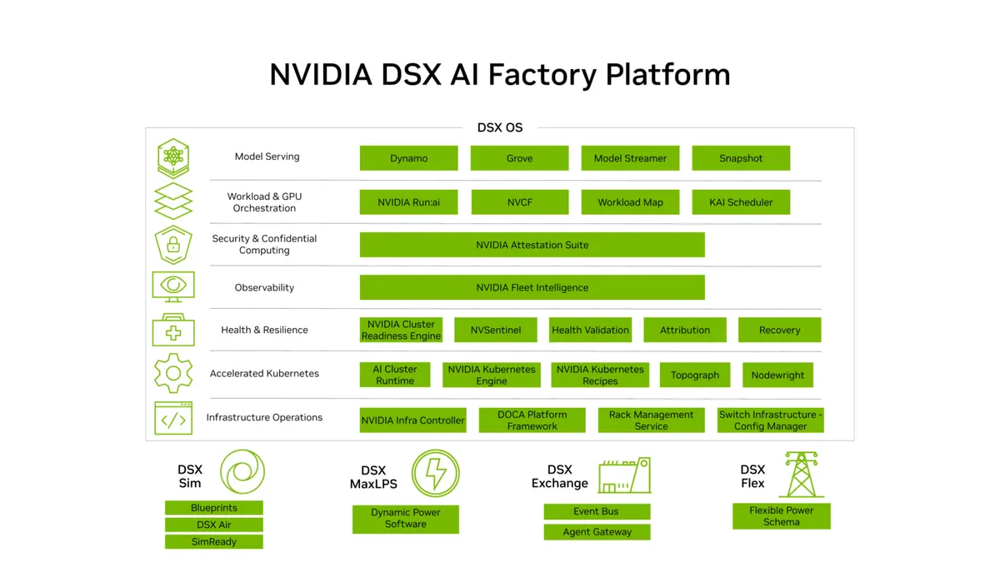

Agent 執行期安全：NVIDIA 把 OpenShell 交給 CNCF
導讀原文：〈NVIDIA Expands Open Source Commitment With OpenShell Donation and New AI Infrastructure〉——廠商公告（NVIDIA 部落格，KubeCon + CloudNativeCon 現場發布）
agent 的問題從來不是「會不會做」，而是「它做的每件事有沒有人管」——OpenShell 就是那層管制的執行期。
NVIDIA 的說法很直接：Kubernetes 已經是 AI 的底座，而自主 agent 正在變成上面最難管的工作負載。
把 OpenShell 捐出去，等於把「怎麼隔離與治理 agent」交給會實際部署它的人與資安社群一起改。
原文的措辭是：安全基礎設施要能被社群建、被檢視、被改進；這比一家廠商自己維護快得多。
CNCF 是 Linux 基金會旗下的非營利組織，也是 KubeCon 的主辦方；Sandbox 是最早期的進入點。

四個位置，各有各的責任
注意第 2 項的歸屬：Agent Substrate 是 Google 主導，NVIDIA 是貢獻者，不是發起者。
這兩個專案一上一下：OpenShell 管「agent 能做什麼」，Agent Substrate 管「agent 跑很久也不會壞」。
對平台團隊的實務差別是：前者靠設定守住邊界，後者要處理排程、狀態與回收。
DSX 那三件工具則是自有的商業產品：Kubernetes Engine 管叢集、Recipes 給現成組態、Snapshot 處理環境快照。
把它們放在同一篇公告裡，訊號是「開源層與產品層一起賣」：治理用開源，規模化用付費。
原文用「AI factory」指大規模 AI 資料中心；這個詞的用意是把算力當產線，而不是當研究設備。
如果是產線，停機與權限失控就是生產事故——這也解釋了為什麼治理層會被拉到這麼前面。
| 專案 | 解決什麼 | 治理歸屬 | 原文限定語 |
|---|---|---|---|
| OpenShell | agent 的隔離與權限治理 | CNCF Sandbox | 由把它做進產品的組織共同治理 |
| Agent Substrate | 長時間 agent 工作負載的營運 | Google 主導、CNCF Sandbox | NVIDIA 為貢獻者 |
| DSX 三件工具 | GPU 叢集的部署與擴充 | NVIDIA 自有產品 | 不是開源專案 |
為什麼是「執行期」而不是「模型」
模型層的競爭已經很擠；真正缺的是 agent 跑起來以後的權限邊界、稽核與隔離。
捐給基金會的好處是可被檢視：安全基礎設施若只有一家廠商能改，採用方很難放心。
另一個信號是場合：選在 KubeCon 發布，等於宣告 agent 是雲原生社群的工作，不只屬於 AI 實驗室。
對企業採用者的實務意義：以後評估 agent 平台，「執行期怎麼隔離」可以直接跟著開源專案問。
但目前能確定的只有「已進 Sandbox」，治理細則、版本節奏都還沒公開。
agent 工作負載的麻煩之處在於：它會長時間跑、狀態散在很多服務、還會呼叫外部工具。
這跟傳統無狀態服務完全不同，也是為什麼需要專門的執行期，而不是把 agent 當一般容器丟上去。
（編輯觀點：Sandbox 是最早期階段，距離「業界標準」還有孵化與畢業兩關，別把今天的新聞讀成定局。）
帶走三件事
戰場移到執行期。agent 能不能上生產，卡在隔離與治理，不在模型分數。
治理權要外放。安全層交給基金會，採用方才敢押注。
看階段，不看標題。Sandbox 只是入口，離標準化還早。
導讀為本站編輯內容（AI 摘解自原文與館藏重點，非官方文件）；專案歸屬與階段依原文敘述。內容經對照原文的獨立事實審查後發布。